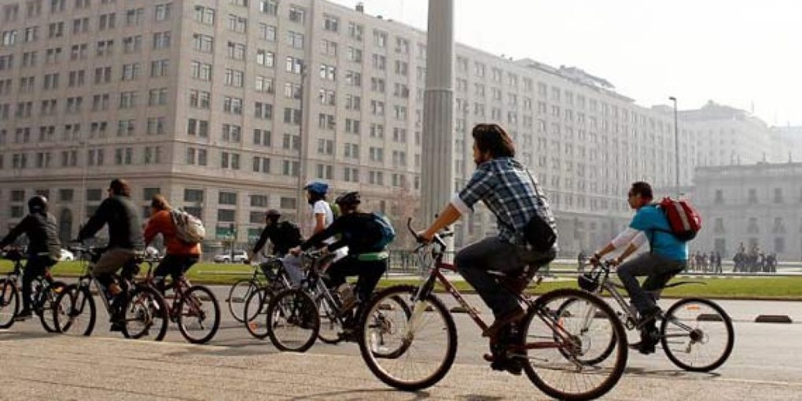

|
La bicicleta se ha convertido en un estilo de vida que miles de chilenos han adoptado como una alternativa al automóvil para trasladarse en las ciudades.
Beneficios: Quema 300 calorías en media Olvídate de los tacos Ahorra tiempo y dinero Mejora tu calidad de vida Contribuye con el medio ambiente Muévete con tranquilidad No necesita combustible No pagas tags o ni estacionamiento Son significativamente más baratas que otros medios de transporte. |
 |
|---|